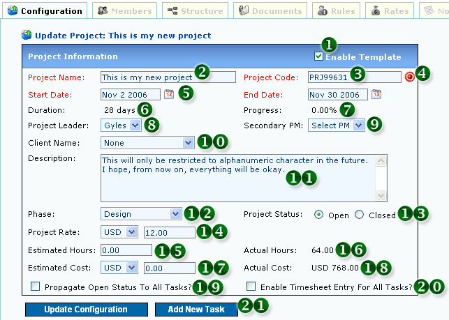
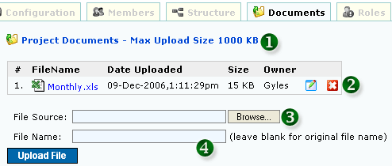
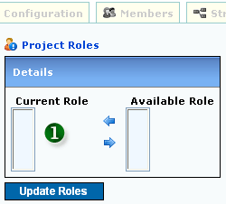
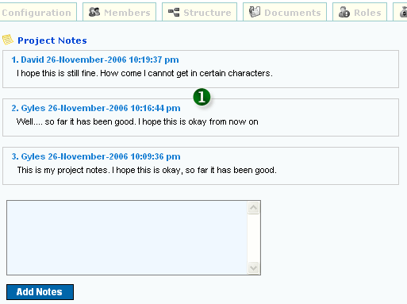

<table class="no-border" cellpadding=3 cellspacing=3>
<tr><td>
	<H1>1. Edit Project</H1>
	<pre align="left">     
	<strong>Figure 1: Edit Project</strong></pre>
	<ol>
		<li><strong>1. ENABLE PROJECT AS TEMPLATE:</strong> This template will appear in the "List Projects - Templates" menu</li>
		<li><strong>2. PROJECT NAME</strong></li>
		<li><strong>3. PROJECT CODE</strong></li>
		<li><strong>4. GENERATE PROJECT CODE:</strong> Project Code will be generated automatically</li>
		<li><strong>5. START AND END DATE</strong></li>
		<li><strong>6. PROJECT DURATION:</strong> Days from Start Date and End Date</li>
		<li><strong>7. PROGRESS PERCENTAGE:</strong> Calculated via average percentage from Tasks in project</li>
		<li><strong>8. PROJECT MANAGER / LEADER SELECTION</strong></li>
		<li><strong>9. SECONDARY PROJECT MANAGER / LEADER SELECTION</strong></li>
		<li><strong>10. PROJECT CLIENT SELECTION</strong></li>
		<li><strong>11. PROJECT DESCRIPTION</strong></li>
		<li><strong>12. PROJECT PHASES SELECTION</strong></li>
		<li><strong>13. PROJECT STATUS:</strong> Open or Closed</li>
		<li><strong>14. PROJECT RATE:</strong> Rate per hour charged in Timesheet</li>
		<li><strong>15. ESTIMATED TOTAL PROJECT HOURS</strong></li>
		<li><strong>16. ACTUAL HOURS CHARGED IN TIMESHEET</strong></li>
		<li><strong>17. ESTIMATED TOTAL PROJECT COST</strong></li>
		<li><strong>18. ACTUAL COST BASED ON HOURS CHARGED IN TIMESHEET</strong></li>
		<li><strong>19. CHECK TO PROPAGATE OPEN STATUS TO ALL TASKS</strong></li>
		<li><strong>20. ENABLE TIMESHEET ENTRY FOR THIS PROJECT</strong></li>
		<li><strong>21. CLICK TO ADD NEW TASK FOR THIS PROJECT</strong></li>
	</ol>
	<H1>2. Project Members</H1>
	Select the "Members" tab to access Project Members page
	<pre align="left">     
	<strong>Figure 2: Project Members</strong></pre>
	<ol>
		<li><strong>1. CURRENT PROJECT MEMBERS:</strong> Members with '*' cannot be removed as they have timesheet hours already charged to project. Members removed from project
		members will be automatically removed in Tasks as well. Members added will NOT be automatically added in Tasks</li>
		<li><strong>2. PROPAGATE MEMBERS TO TASKS AS WELL:</strong> Members added in project can be automatically added to Tasks by checking this box</li>
		<li><strong>3. ALLOW / DENY CURRENT TEAM TO ACCESS PROJECT</strong></li>
		<li><strong>4. PROPAGATE ALLOW / DENY CURRENT TEAM TO TASKS AS WELL</strong></li>
		<li><strong>5. PROJECT MEMBERS' ESTIMATED VS ACTUAL HOURS</strong></li>
	</ol>
	<H1>3. Project Structure</H1>
	Select the "Structure" tab to access Project Structure page
	<pre align="left">     
	<strong>Figure 3: Project Structure</strong></pre>
	<ol>
		<li><strong>1. CLICK LINK TO GO TO DIFFERENT TASKS:</strong> The link in red is the current Project / Task selection</li>
	</ol>
	<H1>4. Project Attachments</H1>
	Select the "Documents" tab to access Project Attachments page
	<pre align="left">     
	<strong>Figure 4: Project Attachments</strong></pre>
	<ol>
		<li><strong>1. CURRENT ALLOWABLE UPLOAD SIZE:</strong> Changeable by Admin</li>
		<li><strong>2. UPLOADED FILES INFORMATION:</strong> Download, Rename and Delete Files</li>
		<li><strong>3. SELECT FILE TO UPLOAD:</strong> Files with size that is more than allowable will be ignored during upload</li>
		<li><strong>4. RENAME UPLOADED FILE:</strong> File will assume the original name if there is no value in this field</li>
	</ol>
	<H1>5. Project Roles</H1>
	Select the "Roles" tab to access Project Roles page
	<pre align="left">     
	<strong>Figure 5: Project Roles</strong></pre>
	<ol>
		<li><strong>1. AVAILABLE PROJECT ROLES:</strong> Project roles can be added by Admin</li>
	</ol>
	<H1>6. Project Rates</H1>
	Select the "Rates" tab to access Project Rates page
	<pre align="left">     
	<strong>Figure 6: Project Rates</strong></pre>
	<ol>
		<li><strong>1. DEFAULT RATE</strong></li>
		<li><strong>2. AVAILABLE RATES:</strong> More rates can be added via Project Roles</li>
	</ol>
	<H1>7. Project Notes</H1>
	Select the "Notes" tab to access Project Notes page
	<pre align="left">     
	<strong>Figure 7: Project Notes</strong></pre>
	<ol>
		<li><strong>1. CURRENT PROJECT NOTES</strong></li>
	</ol>
</td></tr>
</table>